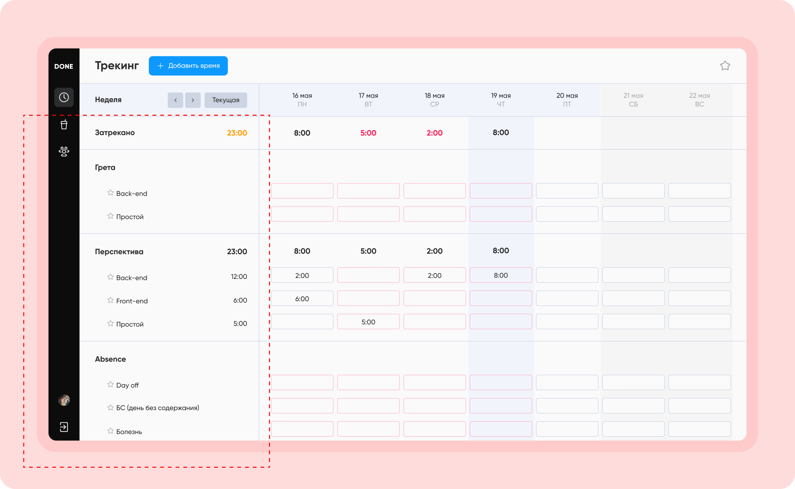
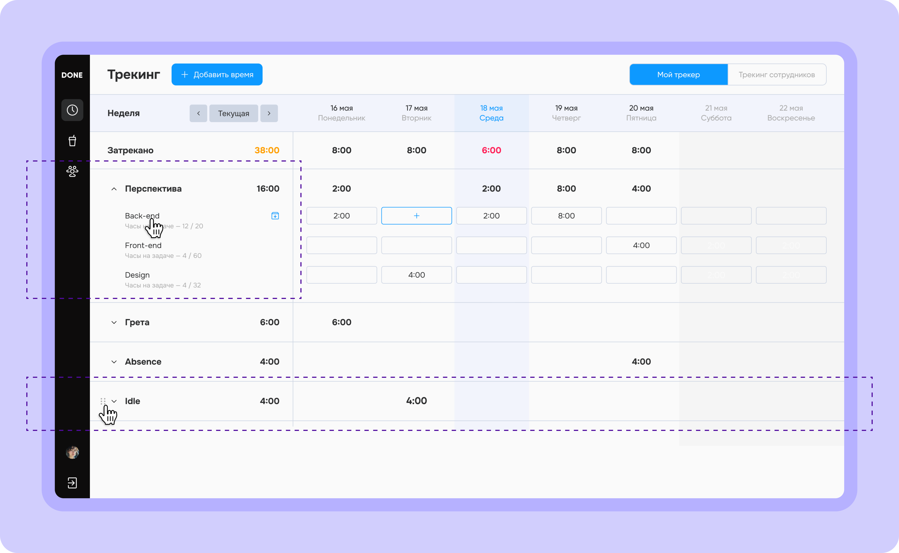
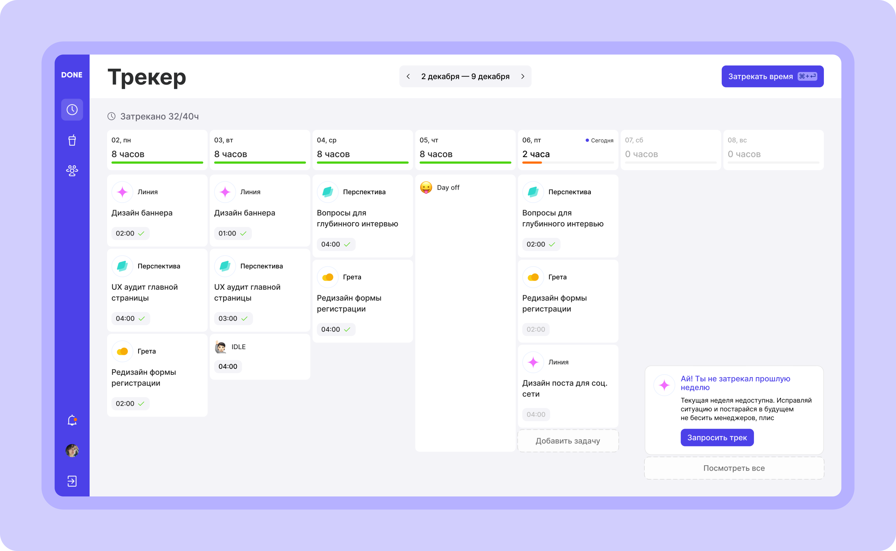

Corporate task-tracker, rethoughtКорпоративный таск-трекер, переосмысленный
Internship at Red Collar Design Studio — auditing a time-tracking & project tool used by employees and managers, then proposing a new UI and a friendlier interaction model.Стажировка в Red Collar Design Studio — аудит инструмента для учёта времени и управления проектами, которым пользуются сотрудники и руководители, и разработка нового интерфейса с более дружелюбной моделью взаимодействия.


DiscoveryИсследование
Eight depth interviews. Two roles. One overgrown UIВосемь глубинных интервью. Две роли. Один разросшийся интерфейс
With a fellow intern I ran 8 interviews, then PURE scoring and a UX audit. The same complaints kept surfacing — the screen was loud where it should be quiet, and quiet where users needed help.Вместе с другим стажёром я провела 8 интервью, затем оценку по методу PURE и UX-аудит. Одни и те же жалобы повторялись снова и снова — экран кричал там, где должен был молчать, и молчал там, где пользователю нужна была помощь.

Quick winsБыстрые победы
Let employees see only todayПоказать сотруднику только сегодняшний день
I trimmed the task list to current work, added archive and inline hour totals, and replaced the misleading hours/minutes placeholder with hour-only inputs — matching how the company actually tracks time.Я сократила список задач до текущей работы, добавила архив и подсчёт часов прямо в строке, а вводившее в заблуждение поле «часы/минуты» заменила вводом только часов — так, как компания на самом деле учитывает время.

For the employeeДля сотрудника
Less searching, more trackingМеньше поиска, больше учёта
Drag-to-reorder, collapsible task groups, remaining-hours per project — small additions that turn tracking from a chore into a five-second routine.Перетаскивание для сортировки, сворачиваемые группы задач, остаток часов по каждому проекту — небольшие добавления, которые превращают учёт времени из рутины в дело на пять секунд.

For the managerДля руководителя
One screen for monitoringОдин экран для контроля
Project creation moved from a cramped drawer to a full-page scroll. The project page gained an interactive table, search and filters, plus a dedicated Employee tracking tab to see who logged what without hunting.Создание проекта переехало из тесной шторки на полноэкранную страницу с прокруткой. Страница проекта получила интерактивную таблицу, поиск и фильтры, а также отдельную вкладку Учёт по сотрудникам — чтобы видеть, кто и что отметил, без долгих поисков.

New conceptНовый концепт
A tracker that feels humanТрекер с человеческим лицом
A friendlier visual, predictive nudges, and a tone-of-voice that treats the employee like a teammate — not a timesheet. Several of these ideas were taken into development after my presentation.Более дружелюбная визуальная подача, предугадывающие подсказки и тон голоса, который относится к сотруднику как к коллеге, а не как к табелю учёта. Несколько из этих идей взяли в разработку после моей презентации.